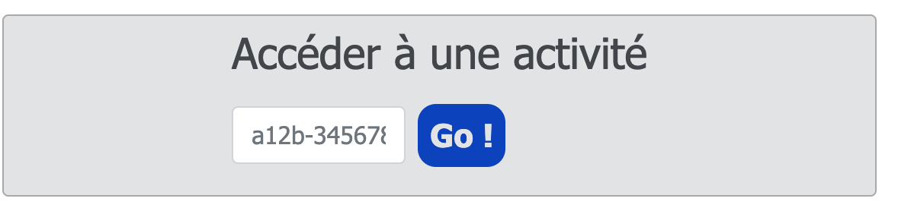

Sur l'ENT, dans la rubrique Ressources, aller sur Capytale puis Accédez à vos activités puis dans Accéder à une activité (voir ci-dessous), rentrer le code donné.

vous avez ouvert un fichier qui comporte deux images (non visibles ici).
Pour vérifier qu'il fonctionne, taper le code suivant dans une cellule:
Après avoir importer la bibliothèque PIL (pour Python Imaging Library ),ce code ouvre la photo buse.jpg et la place en mémoire sous le nom de mon_image. Puis on demande au programme de nous l'afficher.
Remarque : Pour en connaître plus sur cette bibliothèque de traitement d’image, vous pouvez consulter cette page.
Exercice 1.1 :
Ouvrir l'image rose.jpg.Nommer la variable rose puis l'afficher.
Connaître la largeur et la longueur en pixel d'une image#
On peut connaître la largeur et la longueur en pixel d'une image à l'aide des instructions with et height.
fromPILimportImagemon_image=Image.open("buse.jpg")#Cette image a une dimension de 400×200 pixels. Le pixel (0,0) est en haut à gauche.r,v,b=mon_image.getpixel((10,10))print(r,v,b)
fromPILimportImagemon_image=Image.open("buse.jpg")#Cette image a une dimension de 400×200 pixelsforxinrange(400):mon_image.putpixel((x,20),(255,255,255))mon_image.show()
fromPILimportImage# création d'une image de 400 px de large et de 200 px de hautmon_image=Image.new('RGB',(400,200))# zone bleueforxinrange(133):# on balaie x de 0 à 132foryinrange(200):# on balaie y de 0 à 199mon_image.putpixel((x,y),(0,0,255))# On renmplit les points de coordonnées (x, y) de bleu#zone blancheforxinrange(133,266):# on balaie x de 133 à 265foryinrange(200):# on balaie y de 0 à 199mon_image.putpixel((x,y),(255,255,255))# zone rougeforxinrange(266,400):# on balaie x de 266 à 400foryinrange(200):# on balaie y de 0 à 199mon_image.putpixel((x,y),(255,0,0))# affichage du drapeaumon_image.show()
fromPILimportImagemon_image1=Image.open("buse.jpg")#Cette image a une dimension de 400×200 pixelsmon_image2=Image.new('RGB',(400,200))#Crée une seconde a une dimension de 400×200 pixelsforxinrange(400):foryinrange(200):r,v,b=mon_image1.getpixel((x,y))#r,v,b prennent les valeurs des composante RVB du pixel (x,y) de Image1g=(r+v+b)//3mon_image2.putpixel((x,y),(g,g,g))#On fixe la couleur du pixel (x,y) de Image2mon_image2.save("Buse en Gris.jpg")#On enregistre cette imagemon_image2.show()
Remarque : on utilise la division entière avec l'opérateur // (Par exemple : 7 //2 renvoie 3) pour calculer les couleurs des pixels de la nouvelle image.
fromPILimportImagemon_image1=Image.open("buse.jpg")#Cette image a une dimension de 400×200 pixelsmon_image3=Image.new('RGB',(400,200))#Crée une seconde a une dimension de 400×200 pixelsforxinrange(400):foryinrange(200):r,v,b=mon_image1.getpixel((x,y))#r,v,b prennent les valeurs des composante RVB du pixel (x,y) de Image1 mon_image3.putpixel((x,y),(r,0,0))#On fixe la couleur du pixel (x,y) de Image2mon_image3.save("Buse en Rouge.jpg")#On enregistre cette imagemon_image3.show()
Exercice 5.1 :
Réaliser un programme qui effectue la conservation de la composante verte de l'image rose.jpg.
L’idée est de modifier le programme précédent pour que si la moyenne de ses trois composantes est supérieure à 90, le pixel correspondant dans l’image devient blanc, et si cette moyenne est inférieure à 90, le pixel devient noir.
fromPILimportImagemon_image1=Image.open("buse.jpg")#Cette image a une dimension de 400×200 pixelsmon_image4=Image.new('RGB',(400,200))#Crée une seconde a une dimension de 400×200 pixelsforxinrange(400):foryinrange(200):r,v,b=mon_image1.getpixel((x,y))#r,v,b prennent les valeurs des composante RVB du pixel (x,y) de Image1 m=(r+v+b)//3ifm>90:mon_image4.putpixel((x,y),(255,255,255))#On fixe la couleur du pixel (x,y) de Image2else:mon_image4.putpixel((x,y),(0,0,0))#On fixe la couleur du pixel (x,y) de Image2 mon_image4.save("Buse Seuillée.jpg")#On enregistre cette imagemon_image4.show()
Remarque : On peut évidemment changer la valeur du seuil pour obtenir d’autres effets.
Exercice 5.2 :
Réaliser un programme qui effectue le sueillage de la rose avec un seuil égal à 125 rose.jpg.
fromPILimportImagemon_image1=Image.open("rose.jpg")#Cette image a une dimension de 400×300 pixelsmon_image5=Image.new('RGB',(400,300))forxinrange(400):foryinrange(300):r,v,b=mon_image1.getpixel((x,y))#r,v,b prennent les valeurs des composante RVB du pixel (x,y) de Image1 ifr>vandr>b:mon_image5.putpixel((x,y),(r//2,v,b))#On fixe la couleur du pixel (x,y) de Image2else:mon_image5.putpixel((x,y),(r,v,b))#On fixe la couleur du pixel (x,y) de Image2 mon_image5.save("Rose sans Dominante Rouge.jpg")#On enregistre cette imagemon_image5.show()
A partir de l'image iguane.jpg disponible dans l'activité.
Réaliser le programme qui réalise la symétrie suivante.
Exercice 6.2 : symétrie
A partir de l'image iguane.jpg disponible dans l'activité.
Réaliser le programme qui réalise le négatif de cette image.
Remarque : Obtenir le négatif d'une image est très simple : toutes les composantes x de tous les pixels de l'image sont remplacées par 255-x.